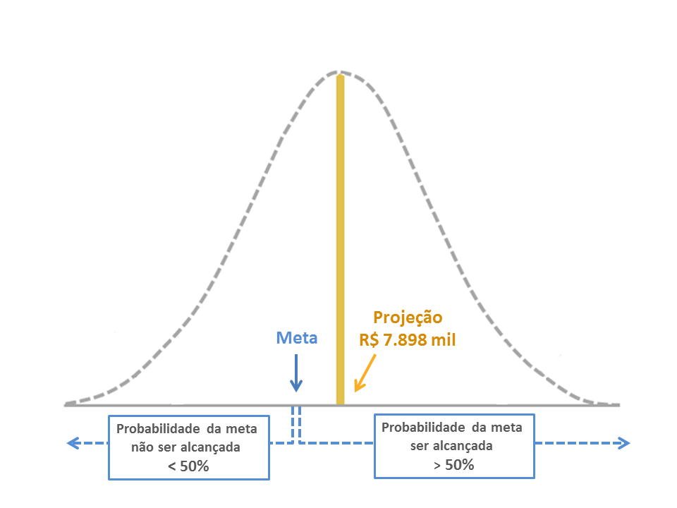

O Foresee é capaz de projetar, em questão de segundos, inúmeras variáveis de interesse estratégico para a gestão de uma empresa, como por exemplo:
São inúmeros os usos práticos de projeção dentro de uma empresa, o que torna difícil exemplificar todos eles.
Existem, entretanto, dois usos extremamente importantes e amplamente difundidos, os quais são analisados a seguir:
Definição de Metas
Metas inatingíveis são reconhecidamente desestimulantes para as equipes de venda. Metas muito fáceis de serem alcançadas não capitalizam as oportunidades de crescimento da empresa.
Por isso, projeções de venda constituem o ponto de partida ideal para a discussão em torno das metas a serem fixadas, uma vez que:
- Sinalizam o que é mais provável
- Fornecem uma referência imparcial para a definição de objetivos
- Dão “dicas” importantes sobre o grau de dificuldade de se alcançar uma determinada meta, expressando essa dificuldade em termos de probabilidade.
Vamos dar um exemplo. Digamos que, em janeiro de 2013, você queira definir a meta de vendas de uma região para este ano.
Para calcular as vendas projetadas para este ano, carregue um arquivo com o histórico de vendas dessa região nos últimos 24 ou 36 meses, atualizado até dezembro de 2012.
O Foresee vai gerar uma tabela com as vendas projetadas dessa região para os 12 meses seguintes, ou seja, para o período de janeiro a dezembro de 2013.
A última coluna dessa tabela (Acumulado) totaliza as projeções mês a mês, de forma que se você examinar o valor acumulado para dezembro de 2013 vai encontrar o total das vendas projetadas para aquele ano, que na tabela abaixo é de R$ 7.897.979,5 ou, arredondando, R$ 7.898 mil (ver fig. 1).

Fig. 1
A fig. 2 abaixo representa a projeção de vendas de 2013 para aquela essa região como uma distribuição de probabilidade, visando facilitar a visualização de probabilidades importantes que são apresentadas a seguir.

Fig. 2
Sabemos que, pelo fato da projeção representar o centro de uma distribuição que contém todos os valores possíveis para as vendas de um determinado período, 50% desses valores possíveis estarão sempre à esquerda da projeção, ou seja, serão menores que a projeção, da mesma maneira que 50% de todos os valores possíveis estarão acima da projeção (veja aqui como interpretar uma projeção).
Isso nos dá uma indicação importante para a definição de metas:
Quando uma meta é fixada no mesmo valor que as vendas projetadas, a probabilidade dela não ser alcançada ou superada é de 50%, uma vez que 50% dos valores possíveis são menores que a projeção. É óbvio que, neste caso, a probabilidade da meta ser alcançada ou superada é também de 50%.
Portanto, quando a meta coincide com a projeção, é importante lembrar que a probabilidade dela não ser alcançada ou superada é de 50%.
Se a meta for fixada abaixo da projeção, a probabilidade dela ser alcançada ou superada é maior que 50%, o que não significa, necessariamente, uma meta fácil de ser atingida. (ver fig. 3).

Fig. 3
Se a meta for fixada acima da projeção (fig. 4 abaixo), a chance de ser alcançada ou superada é menor que 50%. Isso quer dizer que se a empresa atuar em 10 regiões, e adotar esse mesmo critério – metas acima da projeção - para todas elas, a probabilidade é de que mais da metade das regiões (06 ou mais) não consigam alcançar seus objetivos de venda.

Fig. 4
Isso não significa, evidentemente, que a empresa não possa fixar metas iguais ou até mesmo maiores que os valores projetados. Mas é importante, nesses casos, que o esforço de vendas (número de vendedores, gastos em campanhas, promoções, descontos, etc.) seja adequadamente redimensionado.
A finalidade do monitoramento de metas é, em última instância, assegurar as condições necessárias para que os objetivos de venda da organização possam ser alcançados.
É mais fácil atuar sobre problemas ou oportunidades quando esses são detectados com antecedência, e o uso de projeções facilita em muito essa tarefa.
O primeiro passo consiste em calcular o saldo de metas a cumprir. Esse saldo nada mais é que a diferença entre o que já foi vendido até o momento (até 31/05/2013, nesse exemplo) e a meta de vendas para o ano de 2013 (fig. 5).
|
Região I |
Região II |
Região III |
Total |
| Meta para o ano de 2013 |
12.000.000 |
26.000.000 |
20.000.000 |
58.000.000 |
| Vendas Acumuladas até 05/2013 |
4.389.043 |
10.175.190 |
7.251.164 |
21.815.397 |
| Saldo de Meta a Cumprir |
7.610.957 |
15.824.810 |
12.748.836 |
36.184.603 |
Fig. 5
O passo seguinte consiste em gerar projeções de venda cobrindo o período restante de vigência das metas, ou seja, 06 a 12/2013. Para isso basta carregar um único arquivo com as vendas mensais das 03 regiões.
Esse arquivo (veja aqui como formatar um arquivo de dados) deve conter um histórico de pelo menos 24 ou 36 meses de venda para cada uma das regiões, de tal forma que a sazonalidade – caso exista – seja corretamente detectada. Além disso, os dados de venda devem estar atualizados, ou seja, devem reportar o valor das vendas até o último mês disponível, nesse exemplo, 05/2013.
Em poucos segundos o Foresee gera os relatórios com as projeções para as 03 regiões, cobrindo o período de 06/2013 a 05/2014 (12 meses).
A projeção acumulada para o período que nos interessa – que se estende de 06 a 12/2013 - pode ser facilmente obtida examinando-se a última coluna à direita da tabela de projeções (Acumulado) para o Período Dez/2013.
A figura 6 abaixo apresenta a tabela com as projeções de venda para a Região I, onde podemos observar que o valor acumulado para os meses de 06 a 12/2013 nessa região é de R$ 9.435.416.

Fig. 6
O último passo consiste em calcular a diferença entre as vendas projetadas e o saldo de meta a cumprir nas 03 regiões, o que vai nos indicar onde existem déficits ou superávits projetados de venda:
- Déficit Projetado: Indica que a probabilidade da meta ser alcançada ou superada é menor que 50%.
- Superávit Projetado: Indica que a probabilidade da meta ser alcançada ou superada é maior que 50%.
A tabela abaixo (figura 7) apresenta este cálculo para as 03 regiões:
| Região I |
Região II |
Região III |
Total |
| Saldo de Meta a Cumprir até 12/2012 |
7.610.957 |
15.824.810 |
12.748.836 |
36.184.603 |
| Vendas Projetadas para 06 a 12/2013 |
9.435.416 |
16.948.106 |
10.769.164 |
37.152.686 |
| Déficit ou Superávit Projetado |
1.824.459 |
1.123.296 |
-1.979.672 |
968.083 |
Fig. 7
A comparação das vendas projetadas com o saldo de metas a cumprir indica que:
O total de vendas projetado para as 03 regiões no período 06 a 12/2013 (R$ 37.153 mil) é superior ao saldo de metas a cumprir (R$ 36.185 mil).
Isso nos mostra que a probabilidade da empresa alcançar sua meta total de vendas é maior que 50%.
Contudo, é importante notar que o superávit projetado (R$ 968 mil) representa apenas 2,7% do saldo total da meta a cumprir (R$ 36.184 mil), ou seja, a “folga” existente entre as vendas projetadas e o saldo de meta a cumprir é relativamente pequena.
- A região I apresenta um superávit projetado de R$ 1.824 mil, equivalente a 24% do seu saldo de meta a cumprir, o que significa uma “folga” bastante expressiva.
- A região II mostra também um superávit (R$ 1.123 mil), o qual, entretanto, representa apenas 7% do seu saldo de meta a cumprir. A probabilidade da região II alcançar ou superar sua meta é maior que 50%, mas sua situação não é tão tranquila quanto à da região I.
- A região III apresenta um déficit projetado de vendas de quase R$ 2 milhões (-15% do saldo de meta a cumprir), indicando um “gargalo” importante que deverá ser objeto de atenção das áreas de vendas e marketing ao longo dos próximos meses.
Esse monitoramento deve ser atualizado mensalmente, com novas projeções, de forma que o impacto de mudanças no mercado sobre a execução das metas possa ser prontamente avaliado pela empresa.
Finalmente, é interessante lembrar que esse mesmo tipo de análise pode ser estendido – por exemplo - a produtos, equipes de venda ou canais de distribuição, desde que a empresa tenha definido objetivos quantitativos para cada uma dessas “dimensões” de suas vendas.
II. Planejamento de Produção e Compras
Estoques superdimensionados significam custo de capital desnecessário para a empresa.
Estoques subdimensionados representam vendas perdidas e
clientes insatisfeitos.
Por essa razão, é essencial saber quantas unidades de um produto devem ser produzidas ou adquiridas para que a empresa consiga atender seus clientes num determinado mês, sem que isso signifique carregar estoques desnecessariamente elevados.
Gerando uma projeção para o número de unidades vendidas de um determinado produto, essa quantidade pode ser facilmente obtida através do limite superior do Intervalo de Predição de 90% (fig. 8).

Fig. 8
O limite superior desse intervalo no gráfico acima mostra que a probabilidade da demanda desse produto ultrapassar 7.617 unidades em junho é de apenas 5%, o que significa que se a empresa estiver preparada para entregar essa quantidade do produto naquele mês, com 95% de certeza isso será suficiente para atender a demanda de seus clientes. (veja aqui como interpretar uma projeção).
Esse conhecimento da “demanda máxima projetada” se traduz em benefícios muito claros para a empresa: Estoques Eficientes e Níveis elevados de serviço (95%).